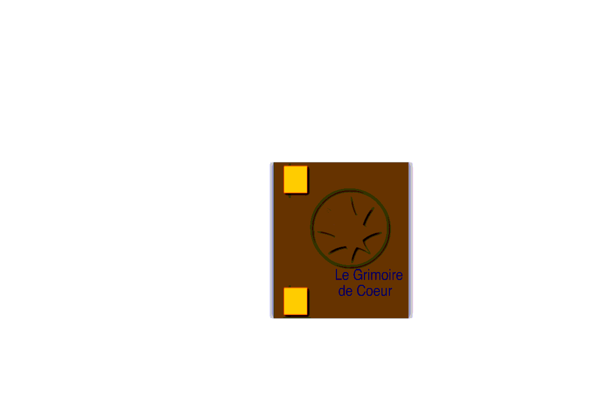
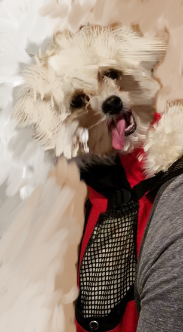
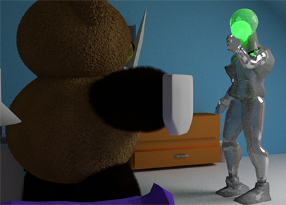
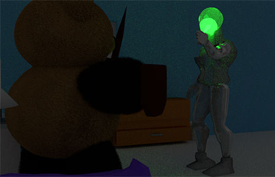

Projects and previous work.
Adobe Flash/Animate
 Final Project
Here is a project that I worked in Adobe Anime.
I was inspired by Atlus's Shin Megami Tensei Persona 3.
Click on the link to see the animation.
Adobe Photoshop/Indesign

This is a of the picture is of Utada Hikaru. Both are done in Adobe Indesign.
The black and white outline is result of using the pen tool.
The one next to it is the final result.

Here I was using the brush tool to bring out the dog's fur.
Blender
 In this photo, I was inspired by the movie Terminator 2: Judgement Day. It helped me to design the figure in the back with the glowing head. While on the other hand, I use the partical engine to bring out texture of the teddy bear's fur.
 Both images are the same. The difference are how the lighting effects brings out more details. With light effect, the teddy bear's fur showed more texture. While the glowing head is very dull.
The four pictures above are a recreation of Courage the Cowardly Dog's living room. I use the software Blender to help create the set. Along with the furniture design the photos were taken from different location to help see the structure of the rooms. Down below is the video of the picture with motion.